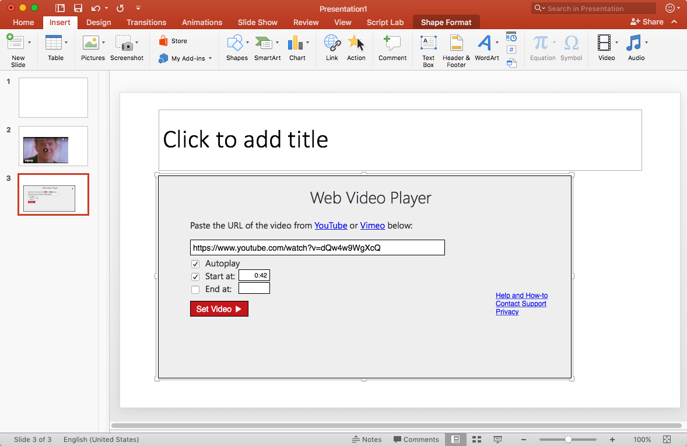

Web Video Player for PowerPoint lets you insert YouTube and Vimeo videos into your presentations. You can get the add-in free from the Web Video Player page on the Office Store.
The add-in works in Microsoft Powerpoint 2016 for Mac and PC, PowerPoint 2013, PowerPoint Online, and PowerPoint for iPad. It also works in those versions of Excel. Using it is simple: for each video you want, insert Web Video Player, enter the video URL, and click Set Video.
The user base is growing (around 60,000 monthly user sessions as of August 2017), but I still only get 20 to 30 requests/bugs/feedback messages per week, so each time you contact me it helps me improve the add-in. So go ahead and tell me about any problems or suggestions at webvideoplayer@outlook.com.
On this page:

On the Insert menu, the Add-ins button has a dropdown arrow to the right. If you've inserted one before, it will appear as an option on the dropdown.
The easiest way to enter a video URL is simply to copy it from the address bar at YouTube or Vimeo. Here are examples of different URLs that are all supported and embed the same YouTube video:
Private YouTube videos cannot be embedded. Unlisted ones can though. You can change the video privacy status for your own YouTube video in your Video Manager on YouTube.
For Vimeo you must simply enter the URL from the address bar in your browser. It looks like this: https://vimeo.com/22542169
To delete a video, first select it. Then press the delete button on your keyboard.
The easiest way to select it is to click the edge of the video (left, right, top, or bottom). If you do it right, you should see eight small white "selection handles" appear at the corners and sides.
Delete the video (how to delete quickly), then insert another one (how to insert quickly).
PowerPoint 2010 and 2011 for Mac do not support Web Video Player or any other web-based add-ins. If you're using Web Video Player with a presentation and then open that presentation in PowerPoint 2010 or 2011, you will still be able to use all the normal PowerPoint features, but the video will appear as a static image. Once you reopen the presentation in a supported (more-recent) version of PowerPoint, the video will play properly again.
If you don't want to pay for an updated version of PowerPoint, you can use PowerPoint Online with OneDrive for free on Mac or PC. And it supports Web Video Player.
Some users have reported a bug on Mac OS Yosemite that causes the sound to play against a black or white screen, without video displayed. Apple has corrected this issue in Mac OS Sierra. You can upgrade for free (instructions: https://www.apple.com/macos/how-to-upgrade/).
If you have suggestions, requests for features you'd find useful, comments, bug reports, or you need help with something that isn't explained well above, please let me know at webvideoplayer@outlook.com.
The add-in never collects, stores, or transmits information that can be used to identify you, except for PayPal data: If you use PayPal to contribute, then PayPal provides Web Video Player with the email address and name from your PayPal account.
Google is used to track traffic, so they do collect metadata such as how many people use the add-in and how often, but not any personally-identifiable information.
Web Video Player is provided with basic video insertion and playing for free. It's funded via $5 voluntary contributions, which can be made through PayPal from the Mac or Windows versions of Office. You must sign in to Office in the top right corner with a work, school, or personal account before purchasing.
Once a user contributes, the add-in stores their Office account identifier in a database. From then on, those users get access to premium features. Those users also get a promise to never see adds in Web Video Player, now and in the future. These premium features work no matter what computer, document, or operating system you use for Web Video Player. The number of files enabled for the $5 contribution is unlimited. The only requirement is that you sign in to Office.
Here is the current list of premium features. All of these are awarded to users who contribute:
Bulk licenses for are available at a discounted rate. The license can be applied to many users at an organization without the users needing to deal with payment for premium features individually. Contact me for details at webvideoplayer@outlook.com.
As always, you can of course use Web Video Player completely free. And I promise to never make you pay for access to features you're already using.